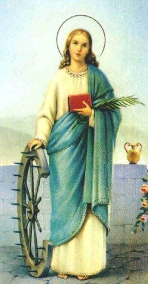

PATRON DNIA
Według legendy Katarzyna urodziła się w Aleksandrii, stolicy Egiptu, jako córka króla Kustosa. Była osobą nie tylko bardzo zamożną, ale także wykształconą. Słynęła z urody. O jej rękę daremnie ubiegali się najznakomitsi obywatele miasta, bo - jak wiele chrześcijanek - złożyła ślub dozgonnej czystości. Wkrótce wybuchło najdłuższe i najbardziej krwawe w dziejach Kościoła prześladowanie chrześcijan - za panowania cesarza Dioklecjana i jego współrządców: Galeriusza Maksymiana i Konstancjusza I. Szczególną nienawiścią do chrześcijan wyróżniał się Maksymian, władca wschodniej części Imperium Rzymskiego. Przybył on osobiście do Aleksandrii, by dopilnować realizacji prześladowczych edyktów. Jedną z jego ofiar miała być Katarzyna.